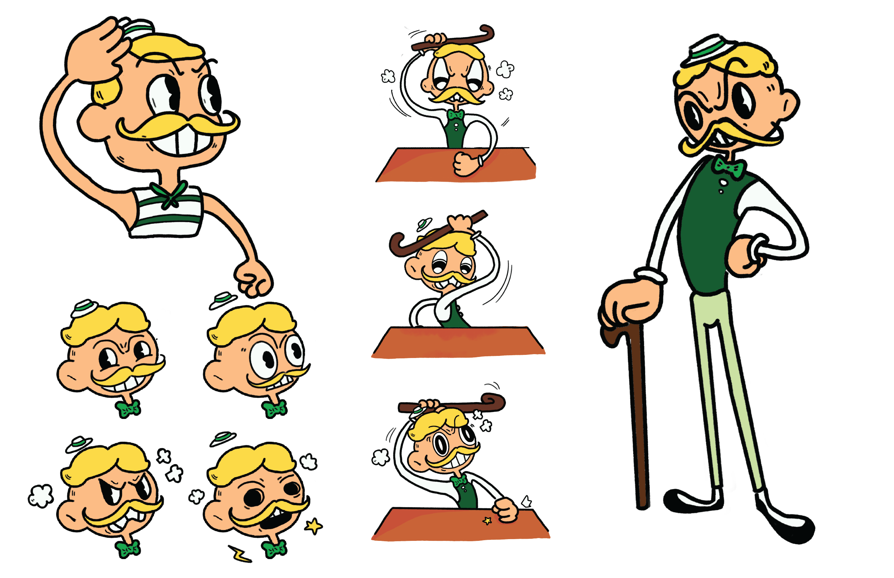
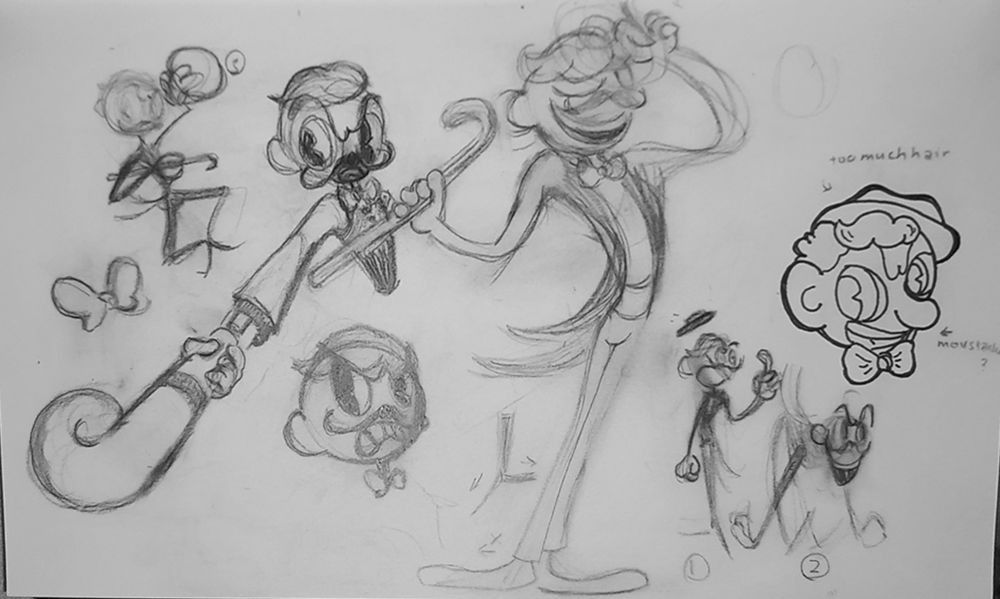
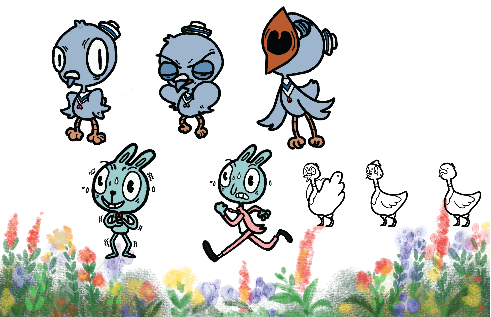
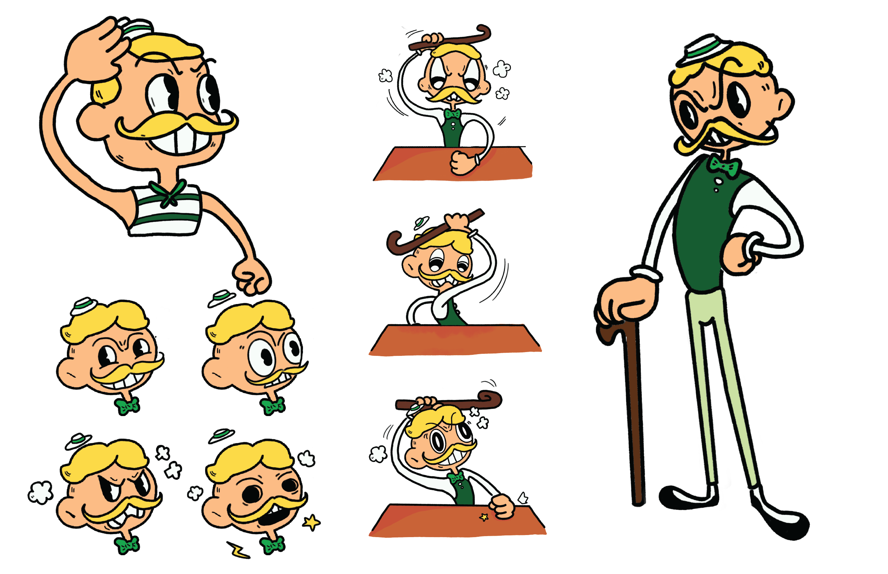
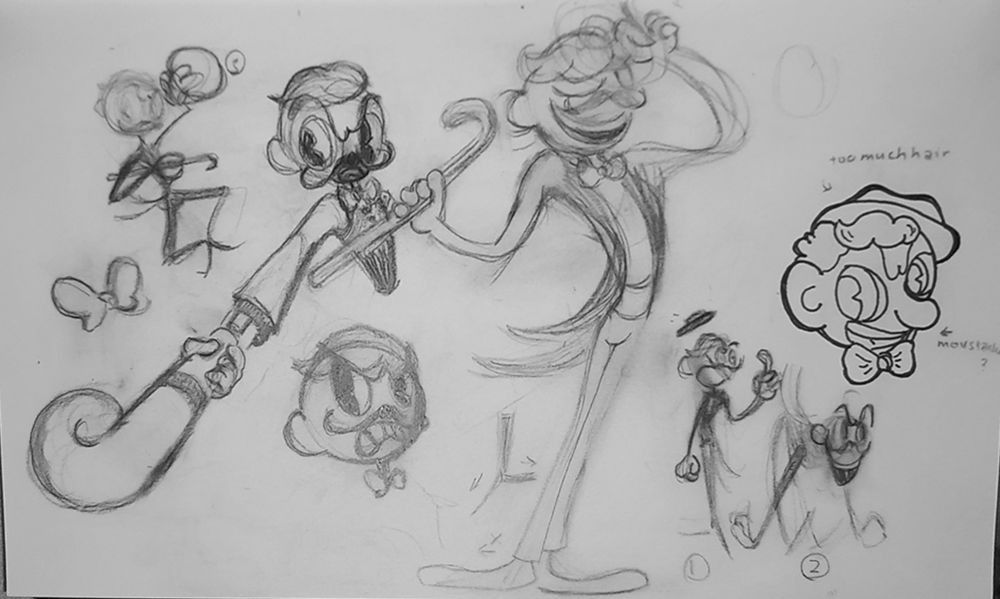
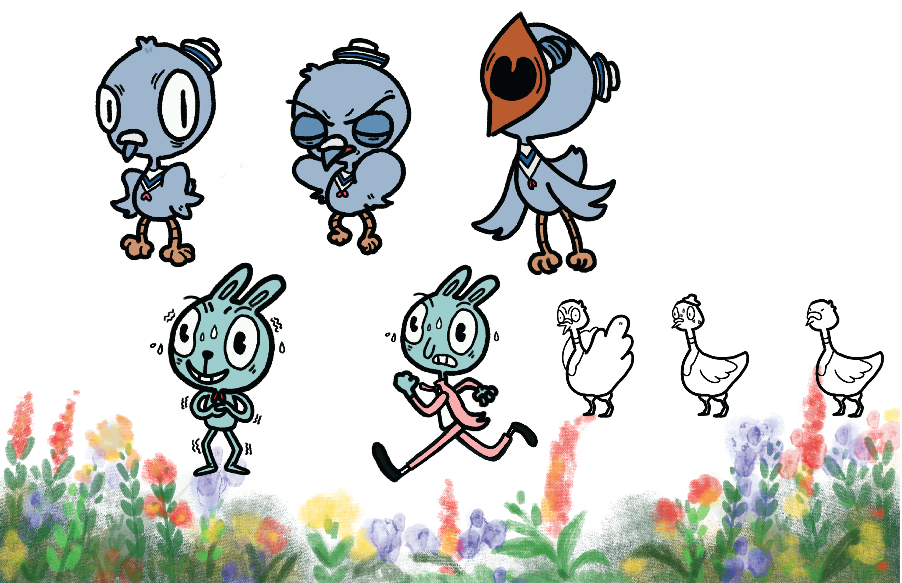

Scrooge Label
in "Rhythmic Labyrinth"
Scrooge Label is a funny, dramatic showman. I’m going with the 60’s tap dancer figure. I also wanted to imply that he’s greedy by having green as his main colour scheme.
His first few designs were slightly different. Initially, he was wearing a tuxedo which was a very fun touch. One of his first design he had a fedora and a younger look. I ended up removing the coat and going with a more mature look for a more slick, clean design. I also explored different poses for Scrooge and the confident, almost ‘cocky’ posture suits his personality the best.
 




